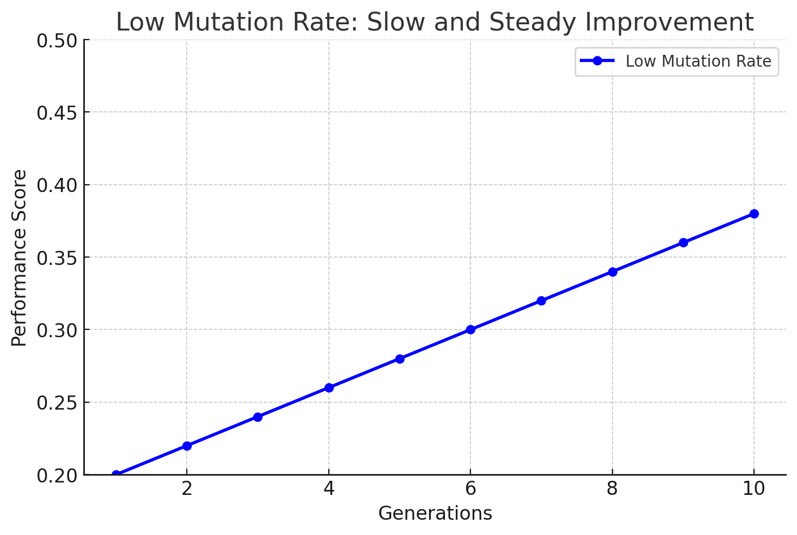
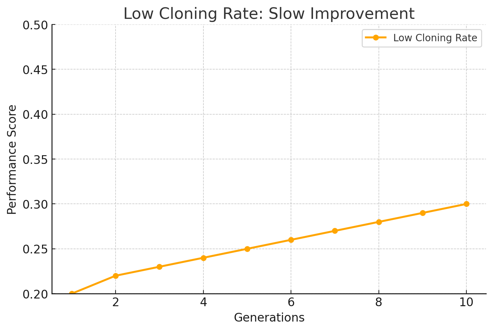
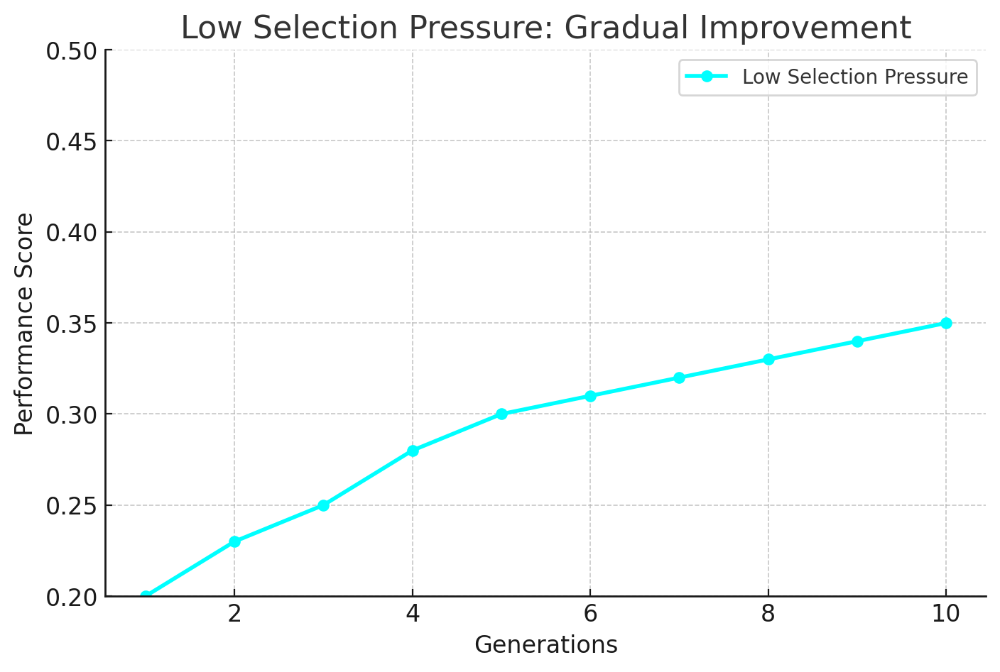

Explore how mutation rate, cloning rate, and selection pressure influence the behavior of the Clonal Selection Algorithm (CSA). Use the sliders below to compare illustrative performance scenarios and learn how each parameter can affect the algorithm's ability to find high-quality solutions.
- Start with a low mutation rate and see how the system behaves.
- Increase the mutation rate and observe any changes in finding better solutions.
- Test how high or low selection pressure affects the speed of finding optimal solutions.
Mutation Rate
Move this slider to change how much variation is introduced in each cycle. Higher mutation rates mean more diversity in the system.

Low Mutation Rate: With a low mutation rate, the system changes only slightly each cycle. This leads to slow and steady improvement, as small tweaks are tested over time. There’s less chance of exploring new, unexpected solutions.
Cloning Rate
Adjust this slider to decide how many copies are made of the best solutions. More clones can speed up finding better answers.

Low Cloning Rate: With a low cloning rate, fewer copies of high-performing solutions are made each cycle. This leads to slow improvement, as the system tests only a small number of variations at a time.
Selection Pressure
Use this slider to control how strict the system is in keeping only the best solutions. Higher pressure focuses on top performers!

Low Selection Pressure: With low selection pressure, the system is less strict about keeping only the best solutions. This results in gradual improvement, as the system explores a broader range of possibilities over time.
RESULTS OF YOUR ADJUSTMENTS
As you adjust the sliders, notice how the performance graphs below change. This simulates how CSA—like the immune system—can balance exploration (trying new solutions) and exploitation (keeping the best ones) to adapt over time.
REFLECTION QUESTION
What do you notice about how different parameter combinations impact the system’s ability to find high-quality solutions?
CONCLUSIONS
Just like the immune system fine-tunes its defenses against pathogens, CSA adapts to solve complex problems through mutation, cloning, and selection. Explore, experiment, and see how this bio-inspired approach can improve performance!